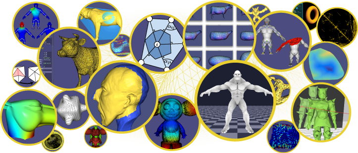

libigl - A simple C++ geometry processing library¶



libigl is a simple C++ geometry processing library. We have a wide functionality including construction of sparse discrete differential geometry operators and finite-elements matrices such as the cotangent Laplacian and diagonalized mass matrix, simple facet and edge-based topology data structures, mesh-viewing utilities for OpenGL and GLSL, and many core functions for matrix manipulation which make Eigen feel a lot more like MATLAB.
It is a header-only library. You do not need to compile anything to use,
just include igl headers (e.g. #include <igl/cotmatrix.h>) and run. Each
header file contains a single function (e.g. igl/cotmatrix.h contains
igl::cotmatrix()). Most are tailored to operate on a generic triangle mesh
stored in an n-by-3 matrix of vertex positions V and an m-by-3 matrix of
triangle indices F.
Optionally the library may also be pre-compiled into a statically linked library, for faster compile times with your projects. This only effects compile time (run-time performance and behavior is identical). If in doubt, use the header-only default mode: (i.e. just include the headers you want to use).
We use the Eigen library heavily in our code. Our group prototypes a lot in MATLAB, and we have a useful MATLAB to libigl+Eigen conversion table.
We regularly test compiling our library on Mac OS X with clang, Linux with gcc and Windows with Visual Studio 2015 Community Edition.
Short Video Introduction¶
Tutorial¶
As of version 1.0, libigl includes an introductory tutorial that covers many functionalities.
libigl Example Project¶
We provide a blank project example showing how to use libigl and cmake. Feel free and encouraged to copy or fork this project as a way of starting a new personal project using libigl.
Coding Guidelines and Tips¶
libigl follows strict coding guidelines, please take a look here before submitting your pull requests. We also have a set of general coding tips on how to code a geometry processing research project.
Installation¶
Libigl is a header-only library. You do not need to build anything to
install. Simply add libigl/include to your include path and include
relevant headers. Here is a small “Hello, World” program:
#include <igl/cotmatrix.h>
#include <Eigen/Dense>
#include <Eigen/Sparse>
#include <iostream>
int main()
{
Eigen::MatrixXd V(4,2);
V<<0,0,
1,0,
1,1,
0,1;
Eigen::MatrixXi F(2,3);
F<<0,1,2,
0,2,3;
Eigen::SparseMatrix<double> L;
igl::cotmatrix(V,F,L);
std::cout<<"Hello, mesh: "<<std::endl<<L*V<<std::endl;
return 0;
}
If you save this in hello.cpp, then you could compile this with (assuming
Eigen is installed in /usr/local/include/eigen3):
g++ -std=c++11 -lpthread -I/usr/local/include/eigen3 -I./libigl/include/ hello.cpp -o hello
Running ./hello would then produce
Hello, mesh:
0.5 0.5
-0.5 0.5
-0.5 -0.5
0.5 -0.5
Dependencies¶
Dependencies are on a per-include basis and the majority of the functions in libigl depends only on the Eigen library.
For more information see our tutorial.
Optional Dependencies¶
Libigl compartmentalizes its optional dependences via its directory
organization in the include/ folder. All header files located directly in
the include/igl/ folder have only stl and Eigen as dependencies. For example,
all of the headers that depend on CGAL are located in include/igl/copyleft/cgal.
For a full list of optional dependencies check cmake/libigl.cmake.
CGAL and Boost
By default, the CMake script for libigl will not build the CGAL dependency,
since Boost is required to compile CGAL. If you enable the CMake option
LIBIGL_WITH_CGAL, you will need to have Boost installed on your machine.
On Windows, it is advised to install Boost using conda. On Linux
and macOS, you will need to install Boost, GMP and MPFR using your
favorite package manager (CGAL itself will be downloaded by libigl).
Downloading Dependencies¶
Libigl uses CMake’s
ExternalProject_Add
to manage external dependencies. External libraries are build statically with
libigl using CMake. In order to be included in the CMake script via
add_subdirectory, the third-party content is fetched at CMake time using the
DownloadProject.cmake script
(which has been introduced in CMake itself with the command
FetchContent in
CMake 3.11).
There is not much to know about this, other than the content will be fetched
the first time you run CMake, and placed into the external/ folder. If
something goes wrong with your dependencies, simply erase your external/
folder and run CMake again. The exact version of each external dependencies
used by libigl are recorded in the file cmake/LibiglDownloadExternal.cmake.
GCC and the Optional CGAL Dependency¶
The include/igl/copyleft/cgal/*.h headers depend on CGAL. It has come to our
attention that CGAL does not work properly with GCC 4.8. To the best of our
knowledge, GCC 4.7 and clang will work correctly. Please the FAQ for
more details.
OpenMP and Windows¶
Some of our functions will take advantage of OpenMP if available. However, it has come to our attention that Visual Studio + Eigen + OpenMP does not work properly. Since we use OpenMP only to improve performance, we recommend avoiding OpenMP on Windows or proceeding with caution.
Download¶
You can keep up to date by cloning a read-only copy of our GitHub repository.
Known Issues¶
We rely heavily on Eigen. Nearly all inputs and outputs are Eigen matrices of
some kind. However, we currently only officially support Eigen’s default
column-major ordering. That means, we do not expect our code to work for
matrices using the Eigen::RowMajor flag. If you can, change definitions like:
Eigen::Matrix<double, Eigen::Dynamic, 3, Eigen::RowMajor> A;
to
Eigen::Matrix<double, Eigen::Dynamic, 3, Eigen::ColMajor> A;
// or simply
Eigen::Matrix<double, Eigen::Dynamic, 3> A;
We hope to fix this, or at least identify which functions are safe (many of them probably work just fine). This requires setting up unit testing, which is a major todo for our development.
Unit Testing¶
As of v2.0.0, unit tests have been moved into the main libigl repository,
under the tests/ folder. Unit test data is downloaded at CMake time if the
option LIBIGL_BUILD_TESTS=ON is given. Please read this page
for more information about unit testing in libigl.
How to Contribute¶
If you are interested in joining development, please fork the repository and submit a pull request with your changes. libigl follows strict coding guidelines, please take a look at our style guidelines before submitting your pull requests.
License¶
libigl is primarily MPL2 licensed (FAQ). Some files contain third-party code under other licenses. We’re currently in the processes of identifying these and marking appropriately.
Citation¶
If you use libigl in your academic projects, please cite the papers we implement as appropriate. To cite the library in general, you could use this BibTeX entry:
@misc{libigl,
title = { {libigl}: A simple {C++} geometry processing library},
author = {Alec Jacobson and Daniele Panozzo and others},
note = {https://libigl.github.io/},
year = {2018},
}
Projects/Universities using libigl¶
Libigl is used by many research groups around the world. In 2015, it won the Eurographics/ACM Symposium on Geometry Processing software award. Here are a few labs/companies/institutions using libigl:
- Activision
- Adobe Research
- Electronic Arts, Inc
- Epic Games
- Google Research
- Industrial Light and Magic
- Mesh consultants, Canada
- Microsoft Research
- Pixar
- Spine by Esoteric Software is an animation tool dedicated to 2D characters.
- vvvv toolkit a multipurpose tookit
- Columbia University, Columbia Computer Graphics Group, USA
- Cornell University, USA
- Czech Technical University in Prague, Czech
- EPF Lausanne, Computer Graphics and Geometry Laboratory, Switzerland
- ETH Zurich, Interactive Geometry Lab and Advanced Technologies Lab, Swizterland
- George Mason University, CraGL, USA
- Hong Kong University of Science and Technology, Hong Kong
- Inria, Université Grenoble Alpes, France
- Jiangnan university, China
- National Institute of Informatics, Japan
- New York University, Media Research Lab, USA
- NYUPoly, Game Innovation Lab, USA
- TU Berlin, Germany
- TU Delft, Netherlands
- TU Wien, Austria
- Telecom ParisTech, Paris, France
- UBISOFT, USA
- Utrecht University, The Netherlands
- Universidade Federal de Santa Catarina, Brazil
- University College London, England
- University of California Berkeley, USA
- University of Cambridge, England
- University of Pennsylvania, USA
- University of Texas at Austin, USA
- University of Toronto, Canada
- University of Victoria, Canada
- University of Wisconsin-Eau Claire, USA
- Università della Svizzera Italiana, Switzerland
- Université Toulouse III Paul Sabatier, France
- Zhejiang University, China
Contact¶
Libigl is a group endeavor led by Alec Jacobson and Daniele Panozzo. Please contact us if you have questions or comments. For troubleshooting, please post an issue on github.
If you’re using libigl in your projects, quickly drop us a note. Tell us who you are and what you’re using it for. This helps us apply for funding and justify spending time maintaining this.
If you find bugs or have problems please use our github issue tracking page.
Copyright¶
2023 Alec Jacobson, Daniele Panozzo, Christian Schüller, Olga Diamanti, Qingnan Zhou, Sebastian Koch, Jeremie Dumas, Amir Vaxman, Nico Pietroni, Stefan Brugger, Kenshi Takayama, Wenzel Jakob, Nikolas De Giorgis, Luigi Rocca, Leonardo Sacht, Kevin Walliman, Olga Sorkine-Hornung, Teseo Schneider, and others.
Please see individual files for appropriate copyright notices.